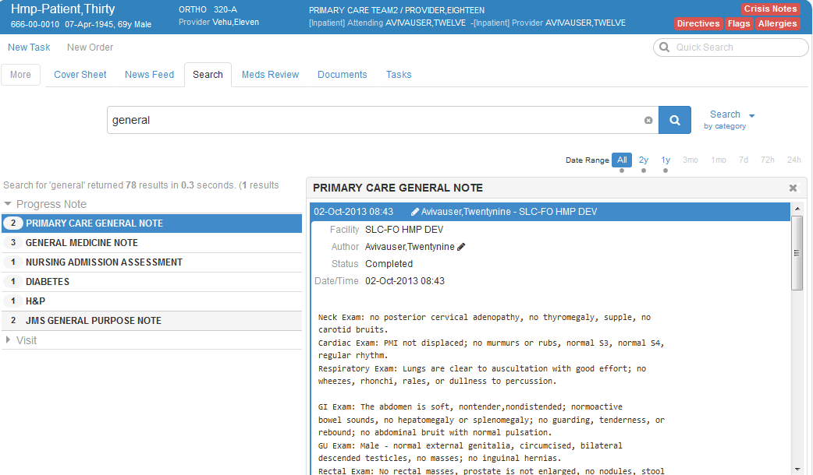
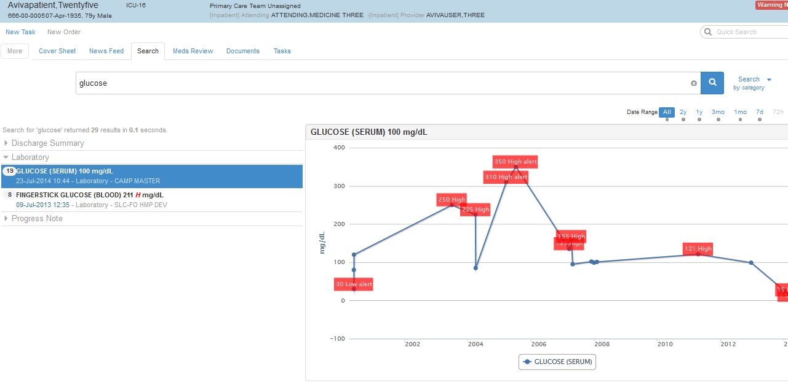

To view details for an item in the Results list, simply click the item. Search displays smart details on the right side of the Results pane.
Following is a brief discussion about the smart details you can expect to see:
Text-Based Items
If you click a document or other text-based item in the Results list, Search displays the document's text in its entirety, with search terms highlighted in yellow. In addition, Search displays the document's;
- Title
- Date and time
- Type
- Author (surname,first name format)
- The name of the originating facility
- Status (Complete, for example
- A facility icon to indicate the document originated outside the local facility—if applicable.>
- A table of contents that links to child notes and addenda—if applicable
- The name of the cosigner or expected cosigner (surname,first name format)—if applicable
- An on-hover signature icon—if applicable—that displays the signer's name (surname,first name format) and the signature date.

Medications
Results for medications echo what you might see on the Meds Review tab and include:
- Medication name
- Medication order status
- Order date and time
- Last-filled date (for outpatient medications)
- Medication domain group (Medication, Outpatient or Medication, Inpatient, for example)
Details for medications also include Infobuttons. See the Meds Review section for further details.
Laboratory Results
Search displays lab results that aren't text-based as graphs:
- The horizontal axis represents time
- The vertical axis represents lab values
- Graphs display data-point values, with data-point details such as abnormal indicators, collection times, reference ranges, ordering providers, and more.

Orders
Smart details for orders include the name and code status of the orderable item as well as the following information:
- Facility
- Start date and time
- Status (Active, for example
- Location
- Ordering provider
- Ordering text
Problems
The application often displays two levels of detail when you click results in the Problem category: the first level breaks out individual problem entries that Search has rolled up. The Search plug-in displays the second level when you click an individual entry. First-level details include:
- The problem's name
- Its International Classification of Diseases (ICD) or SNOMED CT (SCT) code
- Its status
- The onset date
Second-level details include:
The onset date and comments—if any
A New Tasks link
Infobuttons links
Onset date
Status or immediacy
Provider
Location
Facility
Date entered
Date updated
ICD-9 name
Additional Domains
In addition, the Search plug-in displays smart details for items in the following domains:
- Immunizations
- The immunization name, date of administration, and facility
- Vital signs
- A graphical display that illustrates measurement values over time
- Allergies
- Causative agent, nature of reaction, signs and symptoms, drug classes, originator (surname, first name format), date originated, observation date and severity, verified, observed or historical, and comments
- Appointments or visits
- Date, time, facility, patient class, visit type, appointment status, location, stop code, facility, and provider
- Tasks
- Task name, due date, domain group, facility, type, description, regarding, created by, and claimed by